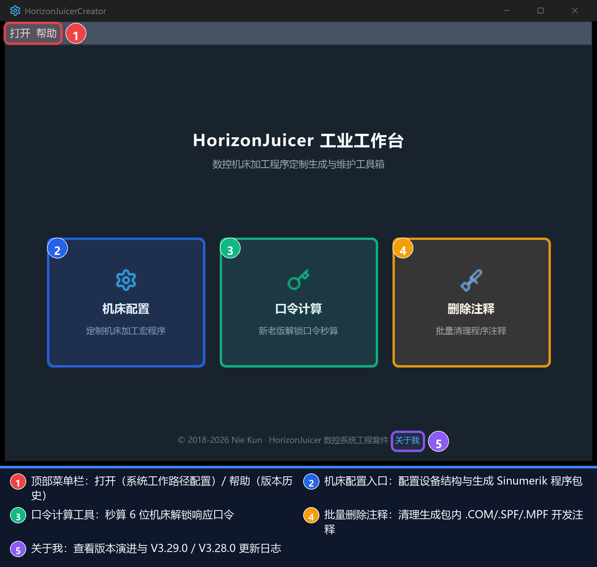
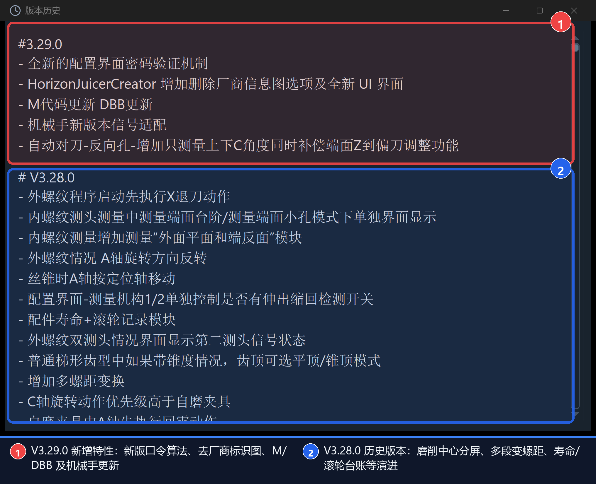

1.1 主工作台、菜单栏与版本历史
1. 启动软件与主工作台布局
双击运行安装目录下的 HorizonJuicerCreator.exe（当前手册基于 V3.29.0 版本编写），首先进入软件主工作台界面。主界面采用深色工程风格设计，顶部为功能菜单栏，中央为三大核心功能入口卡片，左下角标注当前软件版本号 V3.29.0。

三大功能卡片分工如下：
| 卡片名称 | 核心职责 | 说明 |
|---|---|---|
| 机床配置 | 配置设备型号、结构选配并一键生成程序包 | 最核心的工作流入口，点击进入参数配置页（详见第 2 章） |
| 口令计算 | 生成机床端 机床配置 页面的 6 位解锁密码 | 支持 V3.29.0+ 动态随机校验码模式与历史固定编号模式（详见 3.1 节） |
| 删除注释 | 批量清除指定目录下 .com / .spf / .mpf 中的分号注释 |
保留结构化标记注释 ;* 与 ;"，减小现场程序体积并防止冗余文本泄露（详见 3.2 节） |
提示：进入任一子功能页后，界面左上角均提供 返回 按钮，可随时切回主工作台，各页输入状态在单次会话内自动保留。
2. 顶部菜单栏说明
主工作台顶部菜单栏包含两个下拉菜单：
- 打开（File）：
- 参数设置：弹出工作路径配置对话框，用于指定
Horizon-Juicer源仓库路径及目标程序生成路径（详见 1.2 源仓库与输出目录设置）。
- 参数设置：弹出工作路径配置对话框，用于指定
- 帮助（Help）：
- 关于软件：展示软件版本、编译日期、作者与工程版权信息。
- 版本更新日志：打开滚动日志窗口，记录从早期版本至当前版本的功能新增与关键修复明细。

3. 配置文件持久化机制
软件启动时会自动读取当前 Windows 用户目录下的配置 JSON 文件：
C:\Users\<当前用户名>\HorizonJuicerCreator.json
该文件以 UTF-8 JSON 格式保存以下内容：
- 上一次使用的全部机床配置字段（如
machineName、machineIndex、customInfo、systemMode、machineType等 20 余项选项）； - 上一次设置的路径对象
programDir（包含sourceDir与destDir）。
当工程师点击配置页的 保存配置 或触发 程序生成，或修改 参数设置 对话框并点击保存时，软件均会将最新状态回写到 HorizonJuicerCreator.json。
注意：若多台工程师电脑需要统一标准模板，或需要将某型号机床配置固定为团队基线，可直接备份或分发该
HorizonJuicerCreator.json文件（分发后请在目标电脑的 参数设置 中重新确认源仓库目录和程序生成目录是否存在）。